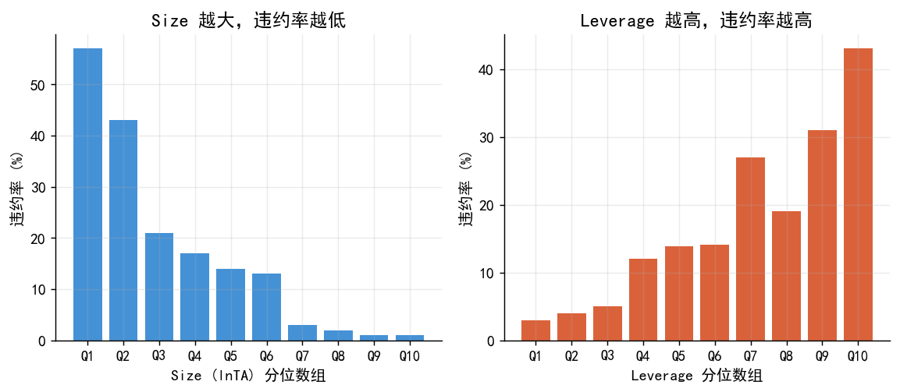
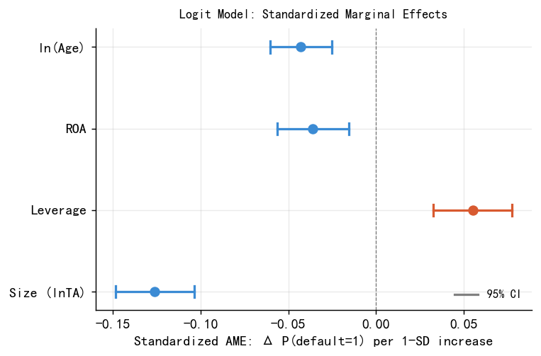
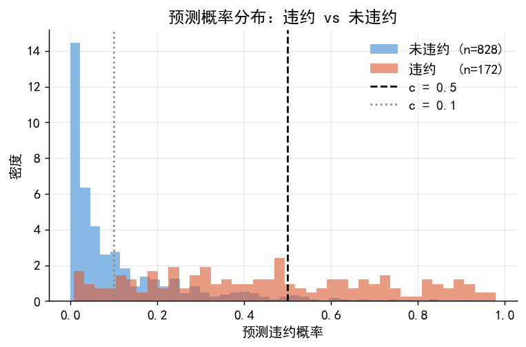
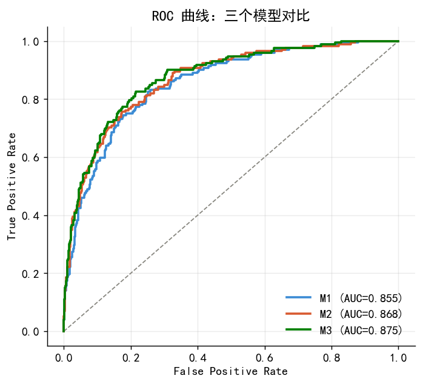
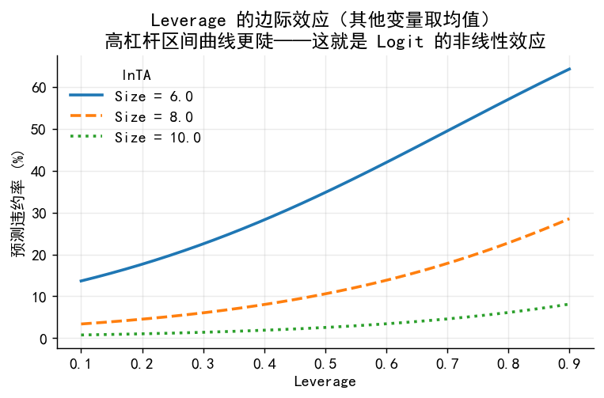

import numpy as np
import pandas as pd
import matplotlib.pyplot as plt
import matplotlib.gridspec as gridspec
from matplotlib.lines import Line2D
from scipy.special import expit
import statsmodels.api as sm
from sklearn.metrics import roc_curve, auc, confusion_matrix
import warnings
warnings.filterwarnings('ignore')
plt.rcParams['font.sans-serif'] = ['SimHei']
plt.rcParams['axes.unicode_minus'] = False
plt.rcParams.update({
'font.size': 11, 'axes.spines.top': False, 'axes.spines.right': False,
'axes.grid': True, 'grid.alpha': 0.25, 'figure.dpi': 130,
})
BLUE, ORANGE, GRAY = '#3B8BD4', '#D85A30', '#888780'
HI = 'Cont. Int. Hi.' # statsmodels 实际列名36 案例：上市公司债务违约分析
数据：直接读取 ./data/corporate_default.csv（由 02_b_binary_codes.ipynb 生成）
流程：
- 数据读取与探索（EDA）
- 模型估计（LPM / Logit / Probit）
- 边际效应（AME + 标准化 AME）
- 预测概率与分类决策
- 模型评估
- 结果解读与业务含义
- 附录：CSMAR 真实数据读取框架
36.1 Part 1：数据读取与探索
df = pd.read_csv('./data/corporate_default.csv')
y = df['default'].values
print(f'样本量: {len(df)} 违约率: {y.mean():.1%} 违约样本: {y.sum()}')
print()
print('=== 描述统计 ===')
print(df[['size','leverage','roa','lnage']].describe().round(2))
print()
print('=== 违约 vs 未违约均值 ===')
print(df.groupby('default')[['size','leverage','roa','lnage']].mean().round(2))样本量: 1000 违约率: 17.2% 违约样本: 172
=== 描述统计 ===
size leverage roa lnage
count 1000.00 1000.00 1000.00 1000.00
mean 8.24 0.49 0.05 2.01
std 1.77 0.19 0.06 0.93
min 2.67 0.05 -0.13 0.00
25% 6.99 0.35 0.01 1.61
50% 8.27 0.48 0.05 2.30
75% 9.39 0.62 0.09 2.71
max 14.93 0.95 0.23 3.43
=== 违约 vs 未违约均值 ===
size leverage roa lnage
default
0 8.59 0.46 0.06 2.12
1 6.56 0.62 0.02 1.51print('=== 所有制 × 违约状态 ===')
print(pd.crosstab(df['ownership'], df['default'], normalize='index').round(2))
print()
print('=== Leverage 中位数（国有 vs 民营）===')
s_med = df[df.ownership=='state']['leverage'].median()
p_med = df[df.ownership=='private']['leverage'].median()
print(f' 国有: {s_med:.2f} 民营: {p_med:.2f} 差: {p_med-s_med:.2f}')=== 所有制 × 违约状态 ===
default 0 1
ownership
private 0.78 0.22
state 0.90 0.10
=== Leverage 中位数（国有 vs 民营）===
国有: 0.40 民营: 0.55 差: 0.15# 分位数违约率图（Size 和 Leverage）
def decile_rate(df, col, n=10):
d = df.copy()
d['bin'] = pd.qcut(d[col], n, labels=False)
return d.groupby('bin')['default'].mean()
fig, axes = plt.subplots(1, 2, figsize=(9, 4))
for ax, col, xlabel, clr in [
(axes[0],'size', 'Size (lnTA) 分位数组', BLUE),
(axes[1],'leverage','Leverage 分位数组', ORANGE)
]:
rates = decile_rate(df, col)
ax.bar(range(10), rates*100, color=clr, alpha=0.95, edgecolor='none')
ax.set_xticks(range(10)); ax.set_xticklabels([f'Q{i+1}' for i in range(10)], fontsize=10)
ax.set_xlabel(xlabel); ax.set_ylabel('违约率 (%)')
axes[0].set_title('Size 越大，违约率越低')
axes[1].set_title('Leverage 越高，违约率越高')
plt.tight_layout()
plt.savefig('./figs/case_decile_bars.png', bbox_inches='tight'); plt.show()
36.2 Part 2：模型估计
- M1：只含 Size 和 Leverage
- M2：加入 ROA 和 ln(Age)
- M3：完整模型（含行业和所有制虚拟变量）
# 哑变量编码（基准：制造业，民营）
df_tmp = df.copy()
df_tmp['industry'] = pd.Categorical(
df_tmp['industry'], categories=['manufacturing','real_estate','finance','tech'])
df_tmp['ownership'] = pd.Categorical(
df_tmp['ownership'], categories=['private','state'])
df_enc = pd.get_dummies(df_tmp, columns=['industry','ownership'], drop_first=True)
feat_m1 = ['size','leverage']
feat_m2 = ['size','leverage','roa','lnage']
feat_m3 = ['size','leverage','roa','lnage',
'industry_real_estate','industry_finance','industry_tech','ownership_state']
models = {}
for name, feats in [('M1',feat_m1),('M2',feat_m2),('M3',feat_m3)]:
X = sm.add_constant(df_enc[feats].astype(float))
models[name] = {
'logit': sm.Logit(y,X).fit(disp=0),
'probit': sm.Probit(y,X).fit(disp=0),
'lpm': sm.OLS(y,X).fit(cov_type='HC3'),
'X': X
}
print('模型估计完成')模型估计完成# M3 Logit 完整结果（对应 lec.qmd Table 1）
m3 = models['M3']['logit']
print('=== M3 Logit 估计结果 ===')
print(m3.summary2().tables[1][['Coef.','Std.Err.','z','P>|z|']].round(2))
print(f'\nMcFadden R² = {m3.prsquared:.3f} AIC = {m3.aic:.1f}')=== M3 Logit 估计结果 ===
Coef. Std.Err. z P>|z|
const 3.66 0.75 4.88 0.00
size -0.75 0.08 -9.27 0.00
leverage 3.04 0.65 4.64 0.00
roa -6.40 1.89 -3.38 0.00
lnage -0.48 0.11 -4.56 0.00
industry_real_estate 0.43 0.28 1.55 0.12
industry_finance -0.11 0.30 -0.38 0.71
industry_tech 0.26 0.28 0.96 0.34
ownership_state -0.79 0.24 -3.29 0.00
McFadden R² = 0.333 AIC = 630.4# 三个模型拟合优度对比
print(f"{'Model':<6} {'LogLik':>10} {'McFadden R²':>12} {'AIC':>10}")
print('-'*42)
for name in ['M1','M2','M3']:
m = models[name]['logit']
print(f"{name:<6} {m.llf:>10.2f} {m.prsquared:>12.4f} {m.aic:>10.2f}")Model LogLik McFadden R² AIC
------------------------------------------
M1 -326.73 0.2882 659.46
M2 -313.36 0.3174 636.71
M3 -306.21 0.3329 630.4236.3 Part 3：边际效应（AME）
# 3.1 三种模型的 AME 对比（对应 lec.qmd Table 2）
ame_l = models['M3']['logit'].get_margeff().summary_frame()
ame_p = models['M3']['probit'].get_margeff().summary_frame()
lpm_c = models['M3']['lpm'].params
core = ['size','leverage','roa','lnage']
print(f"{'变量':<10} {'LPM':>9} {'Logit':>9} {'Probit':>9} sig")
print('-'*48)
for v in core:
lv = lpm_c.get(v, np.nan)
la = ame_l.loc[v,'dy/dx']
pa = ame_p.loc[v,'dy/dx']
p = ame_l.loc[v,'Pr(>|z|)']
star = '***' if p<0.001 else '**' if p<0.01 else '*' if p<0.05 else 'n.s.'
print(f"{v:<10} {lv:>9.3f} {la:>9.3f} {pa:>9.3f} {star}")变量 LPM Logit Probit sig
------------------------------------------------
size -0.067 -0.071 -0.070 ***
leverage 0.289 0.288 0.282 ***
roa -0.609 -0.607 -0.584 ***
lnage -0.052 -0.046 -0.045 ***# 3.2 标准化 AME（对应 lec.qmd Table 3 + Figure case_ame_final）
# 标准化 AME = AME × σ，表示变量增加一个标准差时违约概率的平均变化
PLOT_VARS = ['size','leverage','roa','lnage']
PLOT_LABELS = ['Size (lnTA)','Leverage','ROA','ln(Age)']
std_ame, std_lo, std_hi = [], [], []
print('=== 标准化 AME ===')
print(f"{'变量':<10} {'σ':>6} {'AME':>8} {'stdAME':>9} {'CI_lo':>8} {'CI_hi':>8}")
print('-'*58)
for v in PLOT_VARS:
sig = df[v].std()
r = ame_l.loc[v]
sa = r['dy/dx'] * sig
sl = r['Conf. Int. Low'] * sig
sh = r[HI] * sig
std_ame.append(sa); std_lo.append(sl); std_hi.append(sh)
print(f"{v:<10} {sig:>6.3f} {r['dy/dx']:>8.3f} {sa:>9.3f} {sl:>8.3f} {sh:>8.3f}")
# 绘图
fig, ax = plt.subplots(figsize=(6, 4))
for i, (v, lab, sa, sl, sh) in enumerate(
zip(PLOT_VARS, PLOT_LABELS, std_ame, std_lo, std_hi)):
col = ORANGE if sa>0 else BLUE
ax.plot(sa, i, 'o', color=col, ms=7, zorder=5, clip_on=False)
ax.plot([sl,sh],[i,i], color=col, lw=1.8)
for x in [sl,sh]:
ax.plot([x,x],[i-0.07,i+0.07], color=col, lw=1.8)
ax.axvline(0, color='black', lw=0.7, ls='--', alpha=0.5)
ax.set_yticks(range(4)); ax.set_yticklabels(PLOT_LABELS)
ax.set_xlabel('Standardized AME: Δ P(default=1) per 1-SD increase')
ax.set_title('Logit Model: Standardized Marginal Effects', fontsize=10, pad=8)
ax.legend(handles=[Line2D([0],[0],color='gray',lw=1.8,label='95% CI')],
frameon=False, fontsize=9, loc='lower right')
plt.tight_layout()
plt.savefig('./figs/case_ame_final.png', bbox_inches='tight', dpi=150); plt.show()=== 标准化 AME ===
变量 σ AME stdAME CI_lo CI_hi
----------------------------------------------------------
size 1.768 -0.071 -0.126 -0.149 -0.104
leverage 0.192 0.288 0.055 0.033 0.078
roa 0.059 -0.607 -0.036 -0.056 -0.016
lnage 0.932 -0.046 -0.043 -0.061 -0.025
36.4 Part 4：预测概率与分类决策
# 4.1 两家公司的预测概率（对应 lec.qmd 计算示例）
companies = pd.DataFrame({
'const': 1.0,
'size': [6.5, 9.0],
'leverage': [0.75, 0.35],
'roa': [0.02, 0.08],
'lnage': [np.log(5), np.log(15)], # Age=5 vs Age=15
'industry_real_estate': [1, 0],
'industry_finance': [0, 0],
'industry_tech': [0, 0],
'ownership_state': [0, 1], # A=民营, B=国有
}, index=['公司A（高风险）','公司B（低风险）'])
pA, pB = models['M3']['logit'].predict(companies)
print(f'公司A 违约概率: {pA:.1%}')
print(f'公司B 违约概率: {pB:.1%}')
print(f'倍数: {pA/pB:.0f}x')公司A 违约概率: 64.0%
公司B 违约概率: 0.9%
倍数: 68x# 4.2 不同阈值下的分类指标
prob_all = models['M3']['logit'].predict(models['M3']['X'])
N = len(y)
print(f"{'阈值 c':>8} {'准确率':>8} {'精确率':>8} {'召回率':>8} {'F1':>6} {'预测违约数':>10}")
print('-'*58)
for c in [0.05, 0.10, 0.20, 0.30, 0.50]:
pred = (prob_all>c).astype(int)
cm = confusion_matrix(y, pred)
TP,FP = cm[1,1],cm[0,1]; FN,TN = cm[1,0],cm[0,0]
acc = (TP+TN)/N
prec = TP/(TP+FP) if (TP+FP)>0 else 0
rec = TP/(TP+FN) if (TP+FN)>0 else 0
f1 = 2*prec*rec/(prec+rec) if (prec+rec)>0 else 0
print(f"{c:>8.2f} {acc:>8.3f} {prec:>8.3f} {rec:>8.3f} {f1:>6.3f} {pred.sum():>10}") 阈值 c 准确率 精确率 召回率 F1 预测违约数
----------------------------------------------------------
0.05 0.580 0.284 0.948 0.437 574
0.10 0.697 0.351 0.901 0.506 441
0.20 0.805 0.461 0.791 0.582 295
0.30 0.853 0.562 0.663 0.608 203
0.50 0.868 0.700 0.407 0.515 100# 4.3 预测概率分布图
fig, ax = plt.subplots(figsize=(6, 4))
for yi, col, label in [
(0, BLUE, f'未违约 (n={(y==0).sum()})'),
(1, ORANGE, f'违约 (n={(y==1).sum()})')
]:
ax.hist(prob_all[y==yi], bins=40, alpha=0.6, color=col,
density=True, label=label, edgecolor='none')
ax.axvline(0.5, color='black', lw=1.5, ls='--', label='c = 0.5')
ax.axvline(0.1, color=GRAY, lw=1.5, ls=':', label='c = 0.1')
ax.set_xlabel('预测违约概率'); ax.set_ylabel('密度')
ax.set_title('预测概率分布：违约 vs 未违约')
ax.legend(frameon=False)
plt.tight_layout()
plt.savefig('./figs/case_prob_dist.png', bbox_inches='tight'); plt.show()
36.5 Part 5：模型评估
# ROC 曲线对比（三个模型）
fig, ax = plt.subplots(figsize=(5.5, 5))
ax.plot([0,1],[0,1], color=GRAY, ls='--', lw=1)
for name, col in zip(['M1','M2','M3'],[BLUE,ORANGE,'green']):
pp = models[name]['logit'].predict(models[name]['X'])
fpr,tpr,_ = roc_curve(y,pp); roc_auc=auc(fpr,tpr)
ax.plot(fpr,tpr,color=col,lw=2,label=f'{name} (AUC={roc_auc:.3f})')
ax.set_xlabel('False Positive Rate'); ax.set_ylabel('True Positive Rate')
ax.set_title('ROC 曲线：三个模型对比'); ax.legend(frameon=False)
plt.tight_layout()
plt.savefig('./figs/case_roc_comparison.png', bbox_inches='tight'); plt.show()
36.6 Part 6：结果解读与业务含义
# 6.1 Leverage 的非线性效应（在不同 Size 水平下）
m3_logit = models['M3']['logit']
lev_range = np.linspace(0.1, 0.9, 200)
fig, ax = plt.subplots(figsize=(6, 4))
for s, ls in zip([6.0, 8.0, 10.0],['-','--',':']):
X_pred = pd.DataFrame({
'const':1.0,'size':s,'leverage':lev_range,
'roa':df['roa'].mean(),'lnage':df['lnage'].mean(),
'industry_real_estate':0,'industry_finance':0,
'industry_tech':0,'ownership_state':0
})
ax.plot(lev_range, m3_logit.predict(X_pred)*100, lw=2, ls=ls, label=f'Size = {s}')
ax.set_xlabel('Leverage'); ax.set_ylabel('预测违约率 (%)')
ax.set_title('Leverage 的边际效应（其他变量取均值）\n高杠杆区间曲线更陡——这就是 Logit 的非线性效应')
ax.legend(frameon=False, title='lnTA')
plt.tight_layout()
plt.savefig('./figs/case_leverage_effect.png', bbox_inches='tight'); plt.show()
# 6.2 混淆变量验证：单变量 vs 多变量
own_col = df_enc[['ownership_state']].astype(float)
logit_own1 = sm.Logit(y, sm.add_constant(own_col)).fit(disp=0)
print('=== 单变量 Logit（只含 Ownership）===')
print(logit_own1.summary2().tables[1][['Coef.','Std.Err.','P>|z|']].round(4))
print('\n=== 完整 Logit M3（控制财务特征后）===')
print(m3_logit.summary2().tables[1].loc[['ownership_state'],['Coef.','Std.Err.','P>|z|']].round(4))
print(f'\n原始违约率：民营 {df[df.ownership=="private"]["default"].mean():.1%} '
f'国有 {df[df.ownership=="state"]["default"].mean():.1%}')
print(f'Leverage 中位数：民营 {df[df.ownership=="private"]["leverage"].median():.3f} '
f'国有 {df[df.ownership=="state"]["leverage"].median():.3f}')
print('结论：民营违约率更高，主要由 Leverage 差异驱动（混淆变量效应）')=== 单变量 Logit（只含 Ownership）===
Coef. Std.Err. P>|z|
const -1.2550 0.0994 0.0
ownership_state -0.9263 0.1907 0.0
=== 完整 Logit M3（控制财务特征后）===
Coef. Std.Err. P>|z|
ownership_state -0.7907 0.2406 0.001
原始违约率：民营 22.2% 国有 10.1%
Leverage 中位数：民营 0.553 国有 0.400
结论：民营违约率更高，主要由 Leverage 差异驱动（混淆变量效应）# 6.3 主要发现汇总
print('''
=== 主要发现 ===
1. 规模效应（Size）：标准化 AME = -0.126 ★最强
lnTA 增加 1 个单位（总资产约翻 e 倍），违约概率平均降低 7.1pp
2. 杠杆效应（Leverage）：标准化 AME = +0.055
资产负债率每提高 0.1，违约概率平均上升 2.9pp
注：高杠杆区间（>0.7）效应更陡峭（Logit 非线性）
3. 盈利能力（ROA）：标准化 AME = -0.036
ROA 每提高 1pp（0.01），违约概率平均降低 0.6pp
4. 成熟度（ln(Age)）：标准化 AME = -0.043
上市年限翻倍（5→10 年或 10→20 年），违约概率平均降低约 3.2pp
注：递减效应是对数变换的核心优势
5. 所有制：控制财务特征后，国有企业违约概率显著更低（AME ≈ -7.5pp）
原始违约率差异（22.2% vs 10.1%）主要由 Leverage 分布差异驱动
=== 模型性能 ===
完整模型 AUC = 0.875，McFadden R² = 0.333
=== 业务含义（银行信贷决策）===
在阈值 c = 0.1 下，高召回率但会拒绝约 30% 的正常贷款申请。
银行需要在"漏报坏账"和"误拒好客户"之间权衡业务成本——
这正是阈值选择的经济学本质，ROC 曲线是最佳可视化工具。
''')
=== 主要发现 ===
1. 规模效应（Size）：标准化 AME = -0.126 ★最强
lnTA 增加 1 个单位（总资产约翻 e 倍），违约概率平均降低 7.1pp
2. 杠杆效应（Leverage）：标准化 AME = +0.055
资产负债率每提高 0.1，违约概率平均上升 2.9pp
注：高杠杆区间（>0.7）效应更陡峭（Logit 非线性）
3. 盈利能力（ROA）：标准化 AME = -0.036
ROA 每提高 1pp（0.01），违约概率平均降低 0.6pp
4. 成熟度（ln(Age)）：标准化 AME = -0.043
上市年限翻倍（5→10 年或 10→20 年），违约概率平均降低约 3.2pp
注：递减效应是对数变换的核心优势
5. 所有制：控制财务特征后，国有企业违约概率显著更低（AME ≈ -7.5pp）
原始违约率差异（22.2% vs 10.1%）主要由 Leverage 分布差异驱动
=== 模型性能 ===
完整模型 AUC = 0.875，McFadden R² = 0.333
=== 业务含义（银行信贷决策）===
在阈值 c = 0.1 下，高召回率但会拒绝约 30% 的正常贷款申请。
银行需要在"漏报坏账"和"误拒好客户"之间权衡业务成本——
这正是阈值选择的经济学本质，ROC 曲线是最佳可视化工具。
36.7 附录：使用真实 CSMAR 数据的代码框架
'''
# 从 CSMAR 下载如下变量并整理为 CSV：
# 财务数据：Stkcd, Year, 总资产(A001000000), 总负债(A003000000),
# ROA(F060101B), 上市日期(ListDate), 行业代码(IndCd), 国有虚拟变量(SOE)
# 违约代理：ST/ST* 标注（当年被 ST 视为 default=1）
import pandas as pd, numpy as np
fin = pd.read_csv('csmar_financials.csv')
st = pd.read_csv('csmar_st.csv')
df_real = fin.merge(st, on=['Stkcd','Year'], how='left')
df_real['size'] = np.log(df_real['A001000000'])
df_real['leverage'] = df_real['A003000000'] / df_real['A001000000']
df_real['roa'] = df_real['F060101B']
df_real['age'] = df_real['Year'] - pd.to_datetime(df_real['ListDate']).dt.year
df_real['lnage'] = np.log(df_real['age'].clip(1))
df_real['default'] = df_real['ST'].fillna(0).astype(int)
def map_ind(code):
if code=='J': return 'finance'
if code=='E': return 'real_estate'
if code=='C': return 'manufacturing'
return 'tech'
df_real['industry'] = df_real['IndCd'].apply(map_ind)
df_real['ownership'] = df_real['SOE'].map({1:'state',0:'private'})
df_real = df_real.dropna(subset=['default','size','leverage','roa','lnage'])
df_real = df_real[df_real['leverage'].between(0,1)]
# 替换 df = df_real 后，后续所有代码完全相同
df = df_real.copy()
y = df['default'].values
'''
print('CSMAR 框架已准备，替换路径后运行。')CSMAR 框架已准备，替换路径后运行。